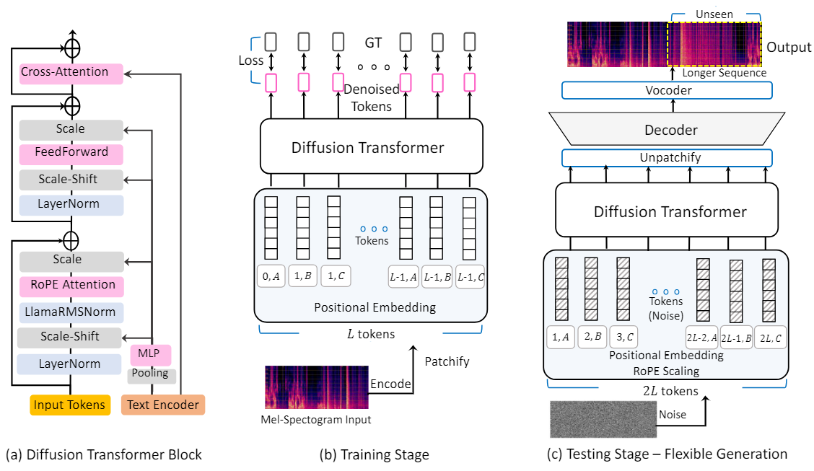

Abstract. In the real world, sounds inherently vary in length, spanning a broad spectrum of durations. Extending audio length beyond what was covered during training, also known as extrapolation, is specifically challenging for audio generative models. We particularly aim to address the challenge of generating variable-length audio in text-to-audio (TTA) diffusion models. The existing TTA diffusion model design notoriously suffers from the problem of generation with such flexibility. Therein, the design of TTA diffusion models do not accommodate to the change of positional information. In this work, we present a TTA diffusion model capable of producing audio of any arbitrary length, requiring no further training and additional conditions beyond the initial text prompts. In particular, we introduce a novel framework based on relative positional embeddings, which is specifically designed to support the flexibility without fundamental changes to the current diffusion pipeline. Our proposed method is \textit{training-free}, thus reducing the training cost for an unseen length. Moreover, our approach enables training with shorter audio durations, enjoying reduced training costs while maintaining performance levels comparable to those achieved with longer durations. Empirically, we demonstrate exceptional performance against the existing state-of-the-arts on audio generation benchmarks with a significantly lower model size compared to the counterparts. In variable audio length generation, our approach consistently outperforms existing methods by a large margin.

High-level overview of FleXounDiT in training and testing, and the DiT block architecture.
We compare the audio generated by FleXounDiT to prior Text-to-Audio works.
| Input | FleXounDiT (ours) | Make-An-Audio2 | Audio-LDM2 | Stable Audio Open |
|---|---|---|---|---|
| Middle aged man speaks foreign language while water is trickling | ||||
| Wind blowing with ducks quacking and birds chirping | ||||
| A man speaking followed by a faucet turning on and off while pouring water twice proceeded by water draining down a pipe | ||||
| A car engine revs and then shuts off | ||||
| Man speaking while insects buzz around | ||||
| Man speaks followed by whistling | ||||
| An emergency siren ringing with car horn honking | ||||
| Birds chirp and sing in the background, while an adult male speaks and crunching footfalls occur | ||||
| A sewing machine sews followed by a man talking | ||||
| Static and beeping | ||||
| A man speaking as a stream of water sprays and splashes | ||||
| A man speaks, and a sewing machine sews material | ||||
| A dog barks and rustles with some clicking | ||||
| A man speaks followed by a vehicle revving | ||||
| A duck quacks followed by a man talking |